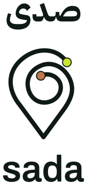
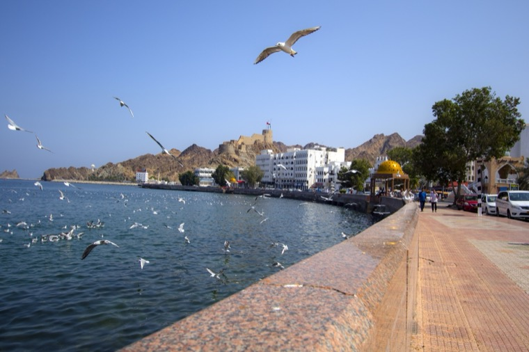
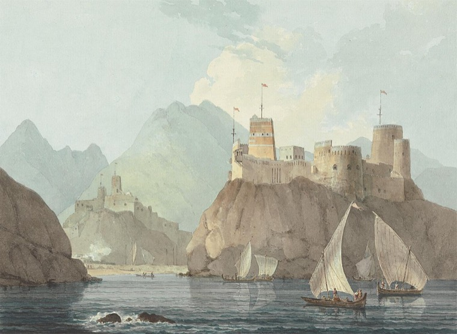

Voices linked to the exact place where you stand — told by the people who know it best.


Follow a voice / find a placeDownload the app and switch on your location.
Explore what's near you, and make your way to the starting point. The voice plays automatically.
Follow the voice, explore the place, learn something new along the way.
Listen to voices linked to the exact place where you stand. Stories you won't find in guide books.
Take a walking tour and learn about your surroundings. Or go on a quest and follow clues to get a prize.
Before you know it you've explored where you are and learned something — many things! — new along the way.
Historians, artists, wellbeing practitioners and people whose roots go back many generations in this exact place.
A place gives something back when you stand in it. That is what the app is for, and what the name means.
Say hello to Jasim Al Lawati and Roshni Goyate, Sada's co-founders, and husband-wife duo. Together they bring over 40 years' experience in storytelling, through TV, film, tech, marketing, poetry and more.
Jasim has traveled the world as a sound recordist, drone operator and producer, capturing some of the most remote wildlife and contributing to globally acclaimed documentaries.
As Sada's CEO, rather than broadcasting stories to screens about his homeland of Oman, he wants to use tech to bring people to the exact locations in Oman where the stories come from.
Roshni has been visiting Oman since 2016 and eventually moved here in 2021, which is when she fell head over heels with the hiking, camping and snorkelling opportunities in the Sultanate.
As our CMO, she brings nearly two decades of experience in tech, branding and advertising as well as having run her own successful startup in London.
Sada is on the App Store now, with Android on the way. Join the list and we'll tell you when there's something worth hearing.